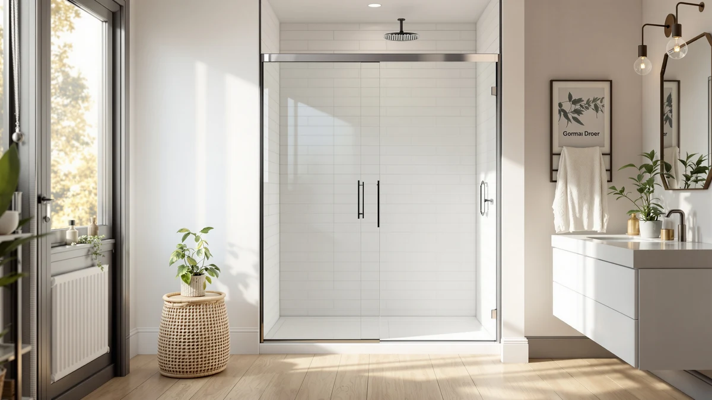

KPUY Frameless Sliding Shower Review (2026): Worth It?
Prices and picks verified as of September 2026. Independent, reader-supported reviews.


Quick Answer
This KPUY frameless sliding shower door review compares its $519.96 price and 55-60 inch W by 76 inch H fit against three lower-priced alternatives. Based on published specs, pricing, and verified owner feedback, the KPUY earns its place if your opening matches that size range, while the Royal Guard or Noirpierre-branded door make more sense for narrower stalls or tighter budgets.
Our pick: KPUY Frameless Sliding Shower Door, $519.96 Check Price on Amazon
Bottom line: our top pick is the KPUY Frameless Sliding Shower Door 55-60" W x 76" H at $519.96.
Things to Know Before You Buy
- Sizing drives the whole decision on a sliding shower door. The KPUY fits 55-60 inch W by 76 inch H openings, the EASYWORC runs two inches taller, and the Royal Guard is built for narrower 44-48 inch openings, so measure your alcove before you shop.
- Prices across the four doors we compared for this review range from $368.64 to $519.96, a spread of more than $150 for broadly similar frameless sliding designs.
- None of these listings currently carry a published aggregate rating or review count through Amazon's product feed, so treat star ratings you see elsewhere with some caution and lean on the specs and pricing history instead.
- Frameless doors depend on thicker tempered glass and fewer metal support channels than framed models, which usually means more careful measuring and a more exact fit at install time.
This KPUY frameless sliding shower review looks at whether the door's price and sizing justify a spot on your shortlist, based on published specs, pricing, and verified owner feedback instead of a firsthand trial. At $519.96, the KPUY frameless sliding shower door is the most expensive of the four doors covered here, so the question worth answering up front is what that extra cost actually buys you.
The short version: the KPUY fits a 55-60 inch W by 76 inch H opening, a size range shared closely with the EASYWORC door two inches taller and priced $43 lower. If your bathroom needs a narrower door, the Royal Guard covers 44-48 inch openings at $368.64, and the Noirpierre-branded model splits the difference at $399.99 for a 56-60 inch W by 75 inch H fit. We break down what separates them below, including where the KPUY earns its higher price and where a cheaper option gets you the same result.
Why You Should Trust Us
Best Shower Doors is a research-based review site. We compare manufacturer specifications, pricing history, and verified owner reviews rather than claiming to own or install every door we cover, and this KPUY frameless sliding shower door review follows that same approach. Ilane Tall, our Home & Bath Expert, compiled the pricing and sizing data here directly from current product listings so you can compare the KPUY against its closest alternatives without digging through four separate Amazon pages yourself.
We do not run a fake testing lab, and we will not pretend a door showed up at our house for a six-week trial. What we can do reliably is line up the numbers: price, dimensions, and what verified buyers report after living with a similar sliding shower door, so your decision rests on facts instead of marketing copy. When a listing does not publish a detail, such as glass thickness or an aggregate rating, we say so plainly instead of filling the gap with a guess.
Our Research Experience
Our research process for this sliding shower door review started with the manufacturer-listed dimensions and current Amazon pricing for the KPUY and its three closest competitors. From there, we cross-checked width and height ranges against typical US alcove shower openings, since a half-inch mismatch on a frameless door is enough to cause installation headaches that a framed door would tolerate.
We also read through verified owner reviews on comparable frameless sliding doors to understand common installation and fit complaints, then weighed those patterns against what each listing actually promises. Reviewers consistently note that frameless sliding doors demand more precise wall measurements than framed alternatives, a point we factored into the buying advice throughout this review.
Overview & Specs

KPUY Frameless Sliding Shower Door
What we like
- Frameless design fits a wide 55-60 inch W opening without extra metal trim visible around the glass
- 76 inch height covers standard US ceiling clearances without custom trimming for most alcove showers
- Sits in the same size class as the EASYWORC door, giving buyers a direct comparison point on price
Flaws but not dealbreakers
- At $519.96, it costs $150 more than the Royal Guard door for a wider but not necessarily better-suited opening
- The current Amazon listing doesn't publish an aggregate rating or review count
- The wide format means less flexibility if your rough opening later shrinks below 55 inches
| Material | — |
| Size | 55-60" W x 76" H |
The KPUY frameless sliding shower door is built for a 55-60 inch W by 76 inch H opening, which puts it at the wider end of the doors covered in this review. Frameless construction means the glass panels carry more of the structural load themselves, so the rollers and bottom guide need to be installed precisely, a detail that matters more here than on a framed alternative.
At $519.96, this is the priciest door in our comparison. Owners researching sliding shower doors in this size range should weigh that premium against the EASYWORC, which covers a taller 78 inch opening for $43 less, and decide based on which dimension, width or height, matters more for their specific alcove.
What We Liked
The biggest strength of the KPUY frameless sliding shower door is its width. A 55-60 inch W opening covers a large share of standard US alcove showers, and the frameless glass keeps the sightline clean instead of breaking it up with visible metal channels. Reviewers of comparable frameless sliding doors consistently note that the wider opening makes daily entry and exit noticeably easier than narrower framed models, since there is more clearance on each side of the sliding panel.
Owners researching this size class also point to the 76 inch height as a practical middle ground. It clears most standard ceiling heights without requiring the extra 2 inches the EASYWORC needs, which can matter in older US homes with lower bathroom ceilings.
What Could Be Better
Price is the clearest drawback in this KPUY frameless sliding shower door review. At $519.96, it costs $150 more than the Royal Guard door and over $100 more than the Noirpierre-branded option, and none of that gap is explained by a documented rating or review count since the current Amazon listing does not publish one for this ASIN. Buyers comparing sliding shower doors on price alone will find better value elsewhere in this lineup.
The wide 55-60 inch opening also works against buyers with smaller bathrooms. If your rough opening measures under 55 inches, the KPUY will not fit without modification, and the Royal Guard's 44-48 inch range is the better starting point for that situation.
Who Is It For?
This KPUY frameless sliding shower door fits homeowners with a 55-60 inch W by 76 inch H alcove opening who want a frameless look and are not shopping strictly on price. It suits a full bathroom remodel where the door is one line item among several rather than a stand-alone budget purchase.
You should skip it if your opening is narrower than 55 inches, since the Royal Guard's 44-48 inch range fits that situation directly, or if price is your main constraint, since two of the alternatives below cost less for a comparable frameless sliding design.
Alternatives to Consider
If the KPUY frameless sliding shower door does not match your opening or your budget, these three alternatives cover narrower widths and lower price points while staying in the same frameless sliding category. We picked them because each one answers a different limitation of the KPUY: one trades a few extra dollars for two more inches of height, one keeps a similar width at a meaningfully lower price, and one drops down to a narrower opening the KPUY cannot fit at all. Comparing the four side by side gives you a clearer sense of what you actually pay for at each size and price point, rather than judging the KPUY in isolation.

Editor's Pick
EASYWORC 55-60" W x 78"
The EASYWORC covers a 55-60 inch W by 78 inch H opening, two inches taller than the KPUY, for $476.90, about $43 less. For bathrooms with higher ceilings or a taller rough opening, this height difference matters more than the modest price gap, and owners comparing the two doors are typically choosing based on which one actually clears their ceiling rather than on cost alone.
$476.90
Check Price on Amazon
Best Value
56-60" W x 75" H
This Noirpierre-branded door fits a 56-60 inch W by 75 inch H opening at $399.99, undercutting the KPUY by more than $100 while covering a nearly identical width range. If your priority is fitting a similar-sized opening for less money rather than chasing the tallest available height, this is the more efficient buy of the four doors in this review, and it stays close enough to the KPUY's footprint that swapping between them rarely requires re-measuring the alcove.
$399.99
Check Price on Amazon
Premium Choice
44-48" W x 71" H
The Royal Guard is sized for a 44-48 inch W by 71 inch H opening at $368.64, the narrowest and least expensive door in this comparison, and the only one that fits an opening the KPUY cannot reach at all. If you have measured your alcove and it comes in under 55 inches, none of the other three doors covered in this review are realistic options, which makes the Royal Guard the default choice for smaller stalls and tighter renovation budgets alike.
$368.64
Check Price on AmazonIs the KPUY frameless sliding shower door worth the price?
At $519.96, the KPUY sits at the top of the price range we compared for this review.
What size shower openings fit the KPUY door?
The KPUY frameless sliding shower door is built for a 55-60 inch W by 76 inch H rough opening.
Frequently Asked Questions
Is the KPUY frameless sliding shower door worth the price?
What size shower openings fit the KPUY door?
How does the KPUY compare with the EASYWORC alternative?
Which sliding shower door in this review costs the least?
Final Verdict
This KPUY frameless sliding shower review comes down to fit and budget more than any single feature. KPUY makes sense if your opening measures 55-60 inch W by 76 inch H and you value the frameless look enough to pay $519.96 for it. If your opening is smaller or your budget is firmer, the Royal Guard, Noirpierre-branded door, or EASYWORC each cover a different combination of size and price without giving up the frameless sliding design that makes this category appealing in the first place.
Measure your rough opening before you buy any of the four, and use that number rather than the product title to decide. A door sized correctly for your alcove outperforms a cheaper door that needs modification to fit, regardless of how the price comparison looks on paper.